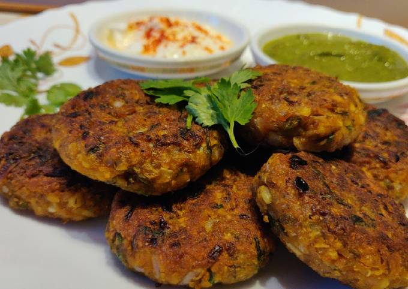
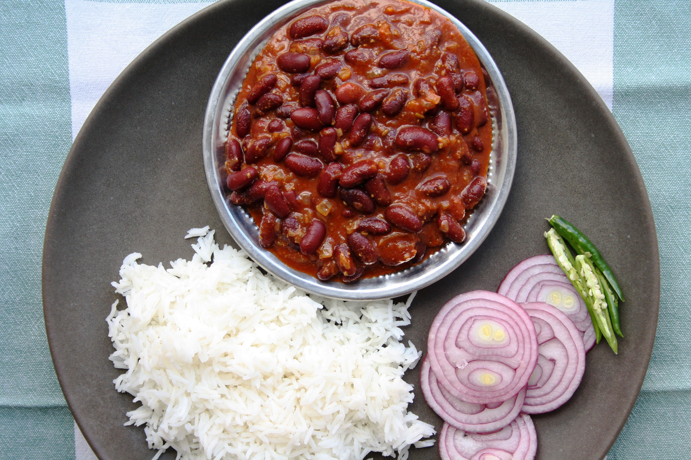

Line a fine-mesh strainer with muslin or cheesecloth and set inside a small bowl. Pour in yogurt; let drain for 15 minutes. Discard liquid.
Mix drained yogurt, ginger-garlic paste, lemon juice, turmeric, chile powder, cumin, garam masala, and salt together in bowl. Add paneer, onion, and green bell pepper and mix well. Marinade for 1 hour.
Preheat grill for medium heat and lightly oil the grate.
Skewer marinated paneer, onion, and bell pepper onto metal skewers. Grill until vegetables are soft and cheese is browned, 6 to 8 minutes. Brush with vegetable oil and grill for 1 minute more.
Mix onion rings with green chutney and serve with skewers.
Cook's Notes:
Substitute butter for the oil if preferred.
Tikka should ideally be cooked in a charcoal grill for its distinctive smoky flavor. It can, however, be cooked on an electric grill as well, or even in a nonstick skillet.
2.Sprouts Tikki

✢Ingredients
For Sprouts Tikki
1 cup sprouted moong (whole green gram)
3 tbsp chopped coriander (dhania)
3 tbsp chopped mint leaves (phudina)
1/4 cup besan (Bengal gram flour)
salt to taste
a pinch asafoetida (hing)
2 tsp green chilli paste
1 tsp oil for greasing and cooking
For Serving With Sprouts Tikki
✢Method:
To make sprouts tikki, blend the sprouted moong along with 2 tbsp water in a mixer to a smooth paste.
Transfer it to a bowl, add the coriander, mint leaves, besan, salt, asafoetida and green chilli paste and mix well.
Divide the mixture into 6 equal portions and roll out each portion into 50 mm. (2”) round flat thin tikkis.
Heat a non-stick tava (griddle), and cook each tikki, using 1/8 tsp oil, till they turn golden brown in colour from both the sides.
Serve the sprouts tikki immediately with green chutney.
3.Kashmiri Rajma

✢Ingredients:
2 cups Kashmiri Rajma , washed and soaked overnight
1 Onion , slices
1 Tomato , finely chopped
3 cloves Garlic , finely chopped
1 inch Ginger , finely chopped
3 Turnips , cut into cubes
1 teaspoon Dry ginger powder
1 teaspoon Kashmiri Red Chilli Powder
1/4 teaspoon Turmeric powder (Haldi)
1 teaspoon Fennel Powder
1/4 teaspoon Kashmiri masala powder , (vaer)
2 tablespoons Mustard oil
2 Onion , slices, to garnish
Salt , to taste
How to make Kashmiri Style Rajma Gogji Recipe - Kidney Beans & Turnip Curry
To begin making Kashmiri Rajma Gogji Recipe, wash and soak the kashmiri rajma in warm water overnight:
Heat a tablespoon of mustard oil in a pressure cooker pan and smoke it, add the onions and saute until it turns golden brown.
Add the ginger and garlic and fry until it turns brown in colour
Add the tomatoes and saute until it becomes soft.
Now, add the turmeric, red chilli, dry ginger and fennel powder and saute for a minute.
Add the drained rajma into the pressure pan along with 4 cups of water.
Add the vaer masala, season with salt, close the pressure cooker pan and cook until 4 whistles in low flame.
Now, simmer for 40 minutes on low flame, and then switch off the flame and let the pressure release on its own.
In the mean, smoke the remaining 1 tablespoon of mustard oil in a pan on medium heat and fry the cubes turnips until it turns golden and keep aside.
Once, the rajma is cooked, put the pressure cooker back on the medium flame, add the fried turnip cubes and simmer for another 10 minutes before serving.
Garnish with sliced onions and serve the Kashmiri Rajma Gogji Recipe along with steamed rice for a lazy weekend brunch along with salad. You can also serve it
with Missi Roti Recipe and Lauki Raita Recipe.